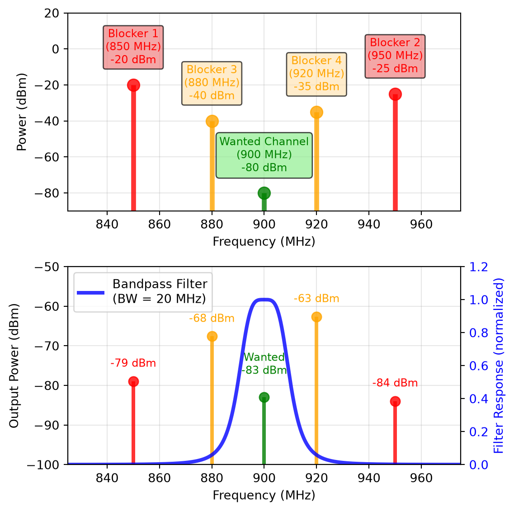
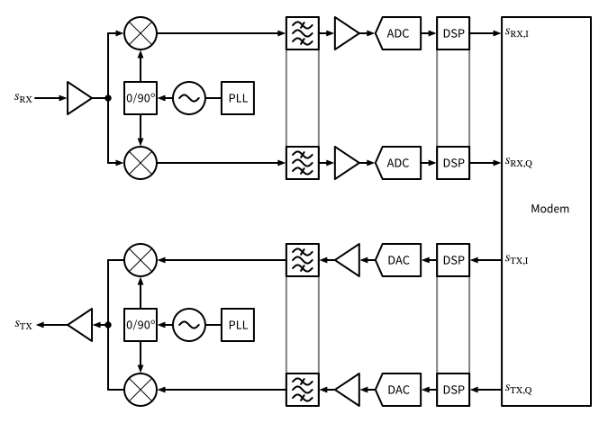
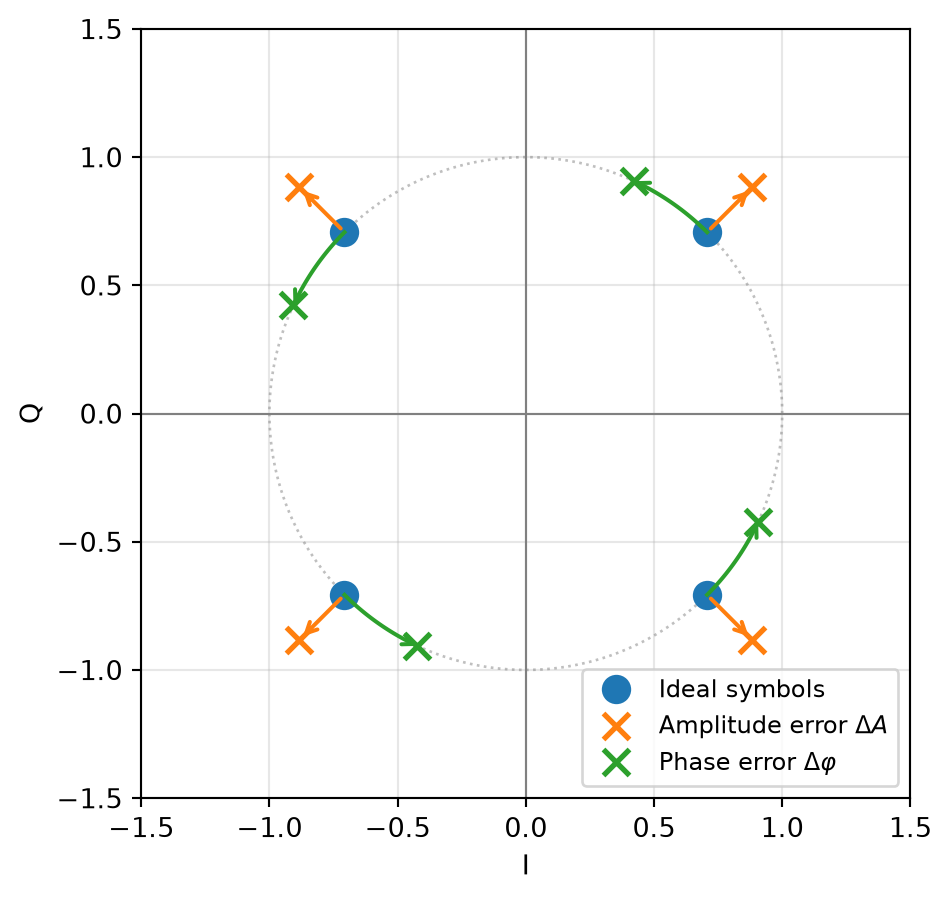

Radio-Frequency Integrated Circuits
Figure 19: Block diagram of a typical transceiver (TRX) showing the main functional blocks of RX and TX.
\[ \tilde{s}_\mathrm{BB}(t) = s_\mathrm{I}(t) + j \cdot s_\mathrm{Q}(t). \]
\[ \tilde{s}_\mathrm{RF}(t) = \tilde{s}_\mathrm{BB}(t) \cdot e^{j \omega_\mathrm{c} t} = [s_\mathrm{I}(t) + j \cdot s_\mathrm{Q}(t)] \cdot [\cos(\omega_\mathrm{c} t) + j \cdot \sin(\omega_\mathrm{c} t)]. \]
\[ s_\mathrm{RF}(t) = \frac{1}{2} \left[ \tilde{s}_\mathrm{RF}(t) + \tilde{s}_\mathrm{RF}^*(t) \right] = s_\mathrm{I}(t) \cos(\omega_\mathrm{c} t) - s_\mathrm{Q}(t) \sin(\omega_\mathrm{c} t). \tag{27}\]
Figure 20: TX modulator.
\[ \begin{split} s_\mathrm{RF}(t) &= \frac{1}{2} \left[ A(t) \cdot e^{j \omega_\mathrm{c} t + j \varphi(t)} + A(t) \cdot e^{-j \omega_\mathrm{c} t -j \varphi(t)} \right]\\ &= A(t) \cdot \cos[ \omega_\mathrm{c} t + \varphi(t) ] \end{split} \]
\[ A(t) = \sqrt{s_\mathrm{I}^2(t) + s_\mathrm{Q}^2(t)}, \quad \varphi(t) = \tan^{-1} \left[ \frac{s_\mathrm{Q}(t)}{s_\mathrm{I}(t)} \right]. \]
Figure 21: RX demodulator.
\[ \begin{split} \tilde{s}_\mathrm{BB}(t) &= s_\mathrm{RF}(t) \cdot e^{-j \omega_\mathrm{c} t}\\ &= s_\mathrm{RF}(t) \cdot [\cos(\omega_\mathrm{c} t) - j \cdot \sin(\omega_\mathrm{c} t)]\\ &\overset{\text{LPF}}{=} \frac{1}{2} \left[ s_\mathrm{I}(t) + j \cdot s_\mathrm{Q}(t) \right]. \end{split} \tag{28}\]

\[ Q = \frac{f_\mathrm{c}}{\Delta f} \]
Filter Technologies Primer
Baseband filters (analog) are usually implemented as active \(RC\) filters on-chip (Schaumann et al. 2009; Zverev 1967). They are very flexible and can have adjustable bandwidth by changing \(R\) and/or \(C\). For medium/high frequencies \(g_\mathrm{m}C\) filters can be used, which are also tunable by changing the transconductance \(g_\mathrm{m}\) and/or \(C\). For even higher bandwidths, on-chip LC filters can be used, which have a limited \(Q\) of around 10–20.
Baseband filters (digital) are implemented as FIR or IIR filters. They can be made programmable and can be easily adapted to different requirements. Digital filters show no variations, so they can be designed to be very high performance. However, a trade-off between power consumption/area (number of bits and operations) and performance exists.
Surface acoustic wave (SAW) and bulk acoustic wave (BAW/FBAR) filters are specialized off-chip components that can achieve high \(Q\) into the thousands. They have a fixed center frequency and bandwidth. Usually 1–2 such filters are required per supported band of interest, which can drive up implementation cost and PCB area for RF front-ends that shall support many different frequency bands.
Crystal filters can achieve very high \(Q\) values of several tens of thousands, but are usually bulky and expensive and limited to an operating frequency of tens of MHz.
LC filters can be either implemented off-chip (using discrete components) or on-chip. Off-chip \(LC\) filters can achieve higher \(Q\) values than on-chip \(LC\) filters, but are usually larger and more expensive. On-chip \(LC\) filters are limited in \(Q\) (around 10–20), but are very compact and can be integrated into the RFIC. Off-chip \(LC\) filters can achieve \(Q\) values of around 50–100, depending on the frequency and component quality. \(LC\) filters can be made tunable by changing \(L\) (difficult) and/or \(C\) (easy).
Ceramic filters are another off-chip filter technology that can achieve moderate to high \(Q\) values (up to several hundreds). They are usually smaller and less expensive than SAW or BAW/FBAR filters, but also have lower performance.
Waveguide filters are used at very high frequencies (above 10 GHz) and can achieve very high \(Q\) values (up to several thousands). They are usually bulky and expensive, and are not commonly used in mobile applications, but rather in fixed installations like base stations or satellite communication.
Optical filters can have extremely high \(Q\) values but are difficult to apply in electronic RF systems due to the need for optical components and the challenge of integrating them with electronic circuits, as well as the required electrical-optical signal conversion.
Figure 23: Block diagram of an FDD RF front-end.
Figure 24: Block diagram of a TDD RF front-end.
| Wireless Standard | Duplexing Method | Comments |
|---|---|---|
| GSM (2G) | FDD & TDMA | TX and RX operate at different frequencies (FDD) and different times (TDMA) |
| UMTS (3G) | FDD | Traditional cellular standard using paired spectrum |
| LTE (4G) | FDD/TDD | FDD is used mostly <2.7 GHz, TDD is used >2.3 GHz |
| 5G NR | FDD/TDD | FDD is used mostly <2.7 GHz, TDD is used >2.3 GHz |
| Wi-Fi (802.11) | TDD | Unlicensed spectrum operation |
| Bluetooth | TDD | Short-range personal area network |
| Zigbee | TDD | Low-power IoT applications |
Figure 25: Block diagram of an in-band full-duplex (FD) RF front-end using two separate antennas for RX and TX, which operate simultaneously at the same frequency.
Figure 26: Block diagram of an in-band full-duplex (FD) RF front-end using a single antenna and a circulator.
Figure 27: Block diagram of a super-heterodyne transceiver (TRX) showing the main functional blocks of RX and TX.

Figure 28: Block diagram of a low-IF transceiver (TRX) showing the main functional blocks of RX and TX.
Figure 29: Block diagram of a direct-modulated oscillator and direct-detection receiver (aka ‘Super Simple’) TX and RX with optional components.

\[ \begin{split} \text{IRR} &= \frac{1 + (1 + \epsilon)^2 + 2 (1 + \epsilon) \cos(\Delta \varphi)}{1 + (1 + \epsilon)^2 - 2 (1 + \epsilon) \cos(\Delta \varphi)}\\ &\approx \frac{4}{\epsilon^2 + (\Delta \varphi)^2}, \end{split} \tag{29}\]
\[ \text{IRR}|_\mathrm{dB} = 10 \cdot \log_{10}(\text{IRR}). \]
\[ \text{EVM} = \frac{\sqrt{\frac{1}{N} \sum_{i=1}^{N} |s_{\mathrm{ideal},i} - s_{\mathrm{meas},i}|^2}}{\sqrt{\frac{1}{N} \sum_{i=1}^{N} |s_{\mathrm{ideal},i}|^2}} \tag{30}\]
\[ \text{EVM}|_\mathrm{dB} = 20 \cdot \log_{10}(\text{EVM}). \]
\[ \text{SNR}|_\mathrm{dB} \approx -20 \cdot \log_{10}(\text{EVM}) = -\text{EVM}|_\mathrm{dB}. \]